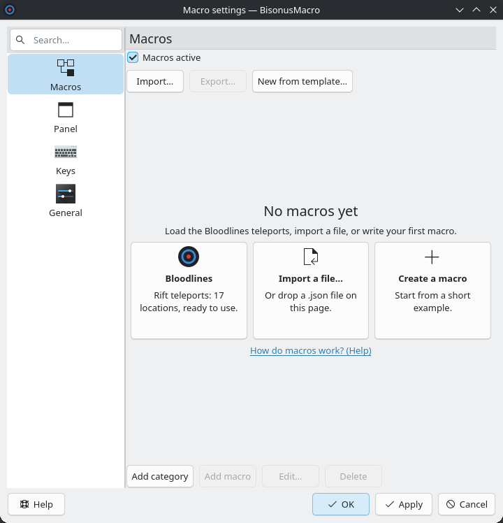

This page takes you from the first start to your first teleport. BisonusMacro types the exact name of a Rift location in the Bloodlines chat. A wrong letter makes your character die. The program types the name without errors.
Start BisonusMacro from the KDE menu. On the first start, KDE shows a window that asks for keyboard access. Accept it. Without this access, all macros are gray. The panel shows the reason, and the button "Ask again" asks KDE again.
After an update to version 0.7.0, KDE shows this window one more time. Accept it again.
The panel opens with your macros in categories. It does not take the focus from the game.
The panel has the frame of KDE. The frame has three buttons on the right. The minus hides the panel in the tray, the square makes it bigger, and the cross stops BisonusMacro. Under the frame is the toolbar. It has the buttons ▾, ⏻, 📌 and ⚙, and the field "Search macros...".
In this picture the list is opaque. By default it is translucent. Press F12 to fold and unfold the panel.
Click the gear button (⚙) in the toolbar of the panel. The main window opens.

The list on the left has four pages: Macros, Panel, Keys and General. The window opens on "Macros". Drag the bar between the list and the page to change the width of the list.
Press Ctrl+F in the main window to search. The search finds the options of every page and the macros in the tree. Ctrl+F works in the help window too.
A new install has no macros. Open the page "Macros" of the main window. It shows "No macros yet" and three cards.

Choose "Bloodlines" to follow this guide. The jutsu is the game technique that prepares the teleport. The template "teleport" presses the key 4 for it and waits 2000 ms. If the jutsu has another key in your game, the page "Editing macros" shows how to change it, at "A template with another key".
"Panel on top of" lists the windows that show the panel. Default: Sober. Click "Add window..." to add a window. Then click the window you want.
"Bring to front before a macro" names the window that the program brings to the front before each macro. Default: Sober. Press "None" to stop this. With this setting, a key pressed in Firefox still teleports you in Sober.
In the tree, find the macro, for example "Snow 2". In the column "Global key", click the key button and press a key, for example F2. Then click "Apply". The key works when the game has the focus. The key does not reach the game.
The program presses the key 4 and waits 2000 ms. Then it presses /, types the name of the location, and presses Enter.
You can also click the row of the macro in the panel. The row stays marked. The macro starts when the cursor leaves the panel and goes into the game. After 3 seconds on the panel, the macro cancels.